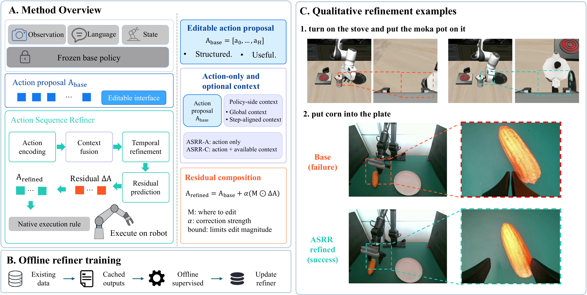
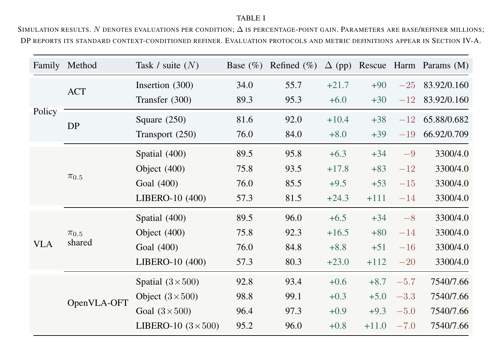
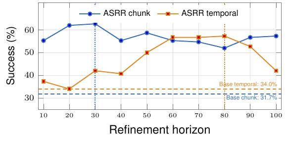
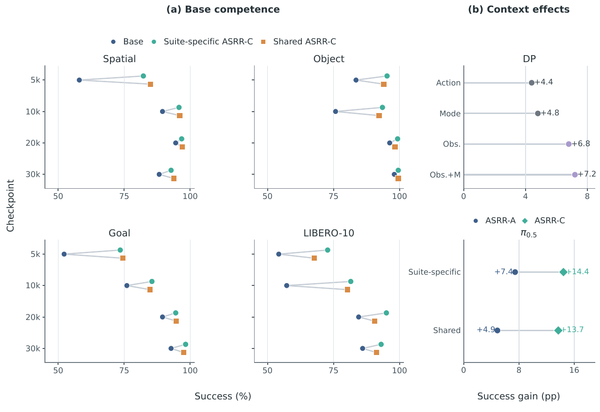

Frozen base
The selected policy checkpoint is unchanged during refiner training.
Anonymous ICRA 2027 Submission
Treat the action proposal as an editable adaptation interface. ASRR keeps the robot policy frozen and learns a compact residual refiner from cached outputs and existing demonstrations.
Interactive explainer
A two-minute guided explanation of the local error, editable interface, residual correction, and recorded evidence.
Illustrative action-space projection
ASRR explainer ready.
Abstract
Robots deployed with limited local computation and intermittent remote support need efficient ways to improve an existing policy. Such a policy may already capture task intent and propose reasonable actions, yet local inaccuracies can still cause failures. Further fine-tuning or reinforcement learning can require costly optimization or additional interaction.
Action Sequence Residual Refinement (ASRR) tests whether a useful action proposal can itself serve as the target of adaptation. It trains a lightweight refiner offline from cached policy outputs and demonstrations, optionally using policy-side context. Across action-sequence policies, modern VLAs, and three real-robot tasks, the results establish predicted action sequences as editable adaptation interfaces.
Method
ASRR predicts a conservative residual in the policy-native action space. The corrected proposal follows the original execution rule, while training reuses cached outputs and existing demonstrations.

The selected policy checkpoint is unchanged during refiner training.
The full temporally structured proposal is the object being corrected.
Cached proposals decouple refiner optimization from large-policy inference.
The refined sequence retains the controller's action horizon and replanning rule.
Results
All reported refiners keep their corresponding base policy frozen.

Analysis
The same-run checkpoint study isolates base competence, while the context comparison examines what information the refiner needs.


From the same starting checkpoint, cached ASRR fitting uses fewer recorded GPU-hours than continuing LoRA to the adjacent checkpoint. Cache extraction is the dominant one-time cost and can be reused for compatible refiner variants at the same checkpoint and dataset.
| Checkpoint pair | 5k→10k | 10k→20k | 20k→30k |
|---|---|---|---|
| Continued LoRA (GPU-h) | 15.79 | 31.51 | 31.18 |
| ASRR cache + fitting (GPU-h) | 11.81 | 11.55 | 11.52 |
| Compute reduction | 25.2% | 63.3% | 63.1% |
| Success: start→ASRR / later Base | 62.0→80.9 / 74.6 | 74.6→89.1 / 91.2 | 91.2→96.4 / 91.3 |
Simulation videos
Representative Base failures and ASRR successes from policy families evaluated in the paper.
Real-robot evaluation
Each method is evaluated over 80 trials per task with the same frozen base policy. Videos play at 3× recorded speed.
Implementation
The repository provides the shared ASRR modules and integration examples for action-sequence policies and VLA controllers evaluated in the paper.
from asrr_core import ActionSequenceResidualAdapter, apply_residual
refiner = ActionSequenceResidualAdapter(
action_dim=7,
horizon=16,
fusion_mode="action_only",
head_type="bounded_dense",
)
delta = refiner(base_action)
refined = apply_residual(base_action, delta, alpha=1.0)Citation
@misc{asrr2026,
title = {ASRR: Offline Action Sequence Residual Refinement
for Robot Policy Adaptation},
author = {Anonymous},
year = {2026},
note = {Anonymous ICRA 2027 submission}
}